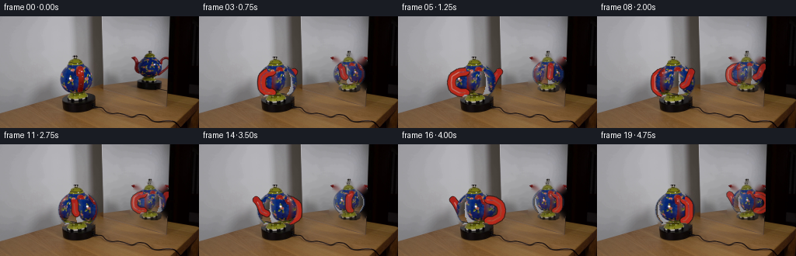
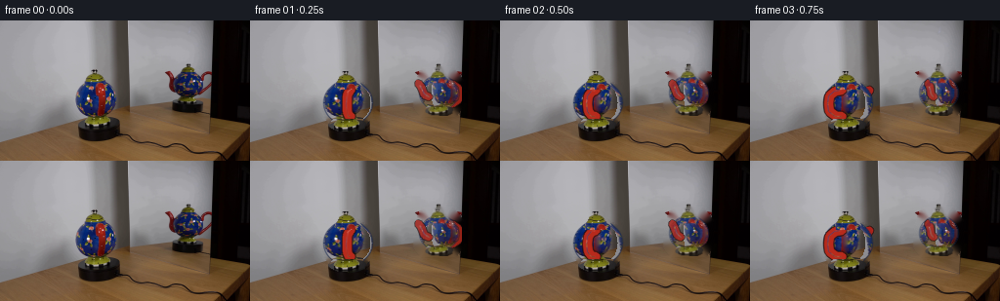
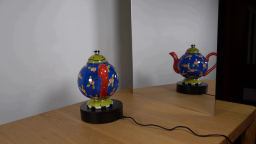
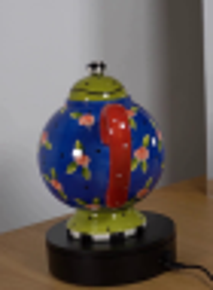
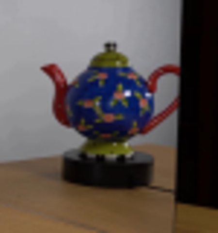

CODING AGENTS AS PIXEL WORLD MODELS
traex/GPT-5.6-Sol · 0123
点击播放 · 原生 RGB 像素
逐轮保存的候选
回放视频、检查图与代码变化。
每份候选均可单独播放。实际图片检查记录在下方工具轨迹中。
候选 01播放与检查图
点击播放 · 原生 RGB 像素


展开代码变化
--- 上一保存版本
+++ 本次保存版本
@@ -0,0 +1,201 @@
+from pathlib import Path
+import math
+import cv2
+import numpy as np
+from PIL import Image
+import artifact_io
+
+HERE = Path(__file__).resolve().parent
+SRC = np.asarray(Image.open(HERE / "first_frame.png").convert("RGB"), dtype=np.uint8)
+H, W = SRC.shape[:2]
+
+
+def poly_mask(shape, pts, blur=0.0):
+ m = np.zeros(shape, np.uint8)
+ cv2.fillPoly(m, [np.asarray(pts, np.int32)], 255)
+ if blur:
+ m = cv2.GaussianBlur(m, (0, 0), blur)
+ return m
+
+# A clean plate is made only from the supplied first frame. The small masked areas
+# are later completely occupied by the rotating pot; inpainting merely removes the
+# old orientation around its silhouette.
+remove = np.zeros((H, W), np.uint8)
+cv2.fillPoly(remove, [np.array([(90,50),(106,50),(108,58),(119,65),(127,78),(127,94),
+ (120,104),(117,109),(84,109),(77,101),(73,89),(75,74),(84,61)],np.int32)],255)
+cv2.fillPoly(remove, [np.array([(175,48),(207,47),(218,60),(218,88),(211,98),(174,98),(167,88),(168,66)],np.int32)],255)
+# Avoid changing the black motor platforms themselves.
+remove[110:] = 0
+remove[105:110, :75] = 0
+base_bgr = cv2.inpaint(cv2.cvtColor(SRC, cv2.COLOR_RGB2BGR), remove, 5, cv2.INPAINT_TELEA)
+BASE = cv2.cvtColor(base_bgr, cv2.COLOR_BGR2RGB)
+
+# Front-body source and a version in which the end-on red handle has been filled
+# from nearby blue glaze. The real floral glaze is then cylindrically advected.
+BODY_SRC = SRC.copy()
+hsv = cv2.cvtColor(BODY_SRC, cv2.COLOR_RGB2HSV)
+red = (((hsv[:,:,0] < 12) | (hsv[:,:,0] > 170)) & (hsv[:,:,1] > 115)).astype(np.uint8)*255
+red_keepout = np.zeros((H,W),np.uint8)
+red_keepout[63:107,102:119] = red[63:107,102:119]
+BODY_CLEAN = cv2.cvtColor(cv2.inpaint(cv2.cvtColor(BODY_SRC,cv2.COLOR_RGB2BGR),red_keepout,4,cv2.INPAINT_TELEA),cv2.COLOR_BGR2RGB)
+
+# Alpha mattes for the unchanged, axially symmetric porcelain pieces.
+lid_mask = poly_mask((H,W), [(91,51),(103,51),(105,56),(108,58),(112,64),(111,69),(87,69),(86,64),(90,58)], .45)
+foot_mask = poly_mask((H,W), [(86,98),(115,98),(119,102),(118,108),(111,111),(90,110),(83,106),(83,102)], .45)
+lid_rgba = np.dstack([SRC, lid_mask])
+foot_rgba = np.dstack([SRC, foot_mask])
+
+
+def alpha_over(dst, rgb, alpha):
+ a = alpha.astype(np.float32)[...,None] / 255.0
+ dst[:] = np.clip(rgb.astype(np.float32)*a + dst.astype(np.float32)*(1-a), 0, 255).astype(np.uint8)
+
+
+def paste_rgba_scaled(dst, rgba, src_box, center, scale, opacity=1.0, clip=None):
+ x0,y0,x1,y1 = src_box
+ cut = rgba[y0:y1,x0:x1]
+ nw,nh = max(1,round((x1-x0)*scale)), max(1,round((y1-y0)*scale))
+ cut = cv2.resize(cut,(nw,nh),interpolation=cv2.INTER_AREA if scale<1 else cv2.INTER_LINEAR)
+ x = round(center[0]-nw/2); y = round(center[1]-nh/2)
+ xa,ya=max(0,x),max(0,y); xb,yb=min(W,x+nw),min(H,y+nh)
+ if xb<=xa or yb<=ya: return
+ sub=cut[ya-y:yb-y,xa-x:xb-x]
+ aa=(sub[:,:,3].astype(np.float32)*opacity).astype(np.uint8)
+ if clip is not None:
+ aa = (aa.astype(np.float32)*(clip[ya:yb,xa:xb].astype(np.float32)/255)).astype(np.uint8)
+ alpha_over(dst[ya:yb,xa:xb],sub[:,:,:3],aa)
+
+
+def body_layer(cx, cy, rx, ry, theta, reflection=False):
+ """Return full-frame RGB/alpha for the approximately spherical glazed body."""
+ rgb=np.zeros((H,W,3),np.uint8); a=np.zeros((H,W),np.uint8)
+ # Fraction of one surface revolution. Mirroring reverses the apparent drift.
+ frac=(theta/(2*math.pi)) * (-1 if reflection else 1)
+ y0=max(0,int(cy-ry-2)); y1=min(H,int(cy+ry+3))
+ for y in range(y0,y1):
+ yy=(y-cy)/ry
+ if abs(yy)>=1: continue
+ half=rx*math.sqrt(max(0,1-yy*yy))
+ xl=max(0,int(math.ceil(cx-half))); xr=min(W-1,int(math.floor(cx+half)))
+ if xr<xl: continue
+ n=xr-xl+1
+ # Map into the corresponding row of the original front body. This retains
+ # tiny painted flowers and photographic illumination instead of inventing a texture.
+ src_y=int(np.clip(84+(y-cy)*(23.0/ry),62,106))
+ oh=25.0*math.sqrt(max(0,1-((src_y-84)/23.0)**2))
+ ol=100-oh; ow=max(2,2*oh)
+ xs=np.arange(n,dtype=np.float32)
+ # Advect one circumference through the visible hemisphere. Small nonlinear
+ # term gives the expected slower motion close to the limb.
+ u=(xs+.5)/n
+ su=(u + frac) % 1.0
+ sx=ol + su*ow
+ mapx=sx.astype(np.float32)[None,:]
+ mapy=np.full((1,n),src_y,np.float32)
+ row=cv2.remap(BODY_CLEAN,mapx,mapy,cv2.INTER_LINEAR,borderMode=cv2.BORDER_REFLECT_101)[0]
+ # Fixed spherical shading makes rotation read as object motion, not a sliding cutout.
+ nx=(np.arange(xl,xr+1)-cx)/rx
+ shade=(0.82 + 0.20*np.sqrt(np.maximum(0,1-nx*nx)) + 0.05*(-nx))[:,None]
+ row=np.clip(row.astype(np.float32)*shade,0,255).astype(np.uint8)
+ rgb[y,xl:xr+1]=row
+ edge=np.minimum(1.0, np.minimum((np.arange(n)+1)/1.4,(np.arange(n,0,-1))/1.4))
+ a[y,xl:xr+1]=(255*edge).astype(np.uint8)
+ # A restrained dark-blue ceramic rim strengthens the globe contour.
+ outline=np.zeros((H,W),np.uint8)
+ cv2.ellipse(outline,(round(cx),round(cy)),(round(rx),round(ry)),0,0,360,135,1,cv2.LINE_AA)
+ return rgb,a,outline
+
+
+def tube(layer, points, scale, color=(176,31,22), width=6):
+ pts=np.rint(np.asarray(points)).astype(np.int32).reshape((-1,1,2))
+ w=max(1,round(width*scale))
+ cv2.polylines(layer,[pts],False,(61,21,19,245),w+2,cv2.LINE_AA)
+ cv2.polylines(layer,[pts],False,(*color,255),w,cv2.LINE_AA)
+ # Slim upper-left specular reflection on the glossy red glaze.
+ hi=np.asarray(points,float); hi[:,0]-=.65*scale; hi[:,1]-=.35*scale
+ cv2.polylines(layer,[np.rint(hi).astype(np.int32).reshape((-1,1,2))],False,(230,78,58,125),max(1,round(1.15*scale)),cv2.LINE_AA)
+
+
+def appendage_layer(cx,cy,scale,theta,xsign=1):
+ """Two glossy red components, divided into rear and front depth layers."""
+ rear=np.zeros((H,W,4),np.uint8); front=np.zeros_like(rear)
+ s=math.sin(theta)*xsign; c=math.cos(theta)
+ # Handle points toward the camera at theta=0. Its loop collapses naturally
+ # into the vertical red band visible in the supplied first frame.
+ hs=-s
+ top=np.array([cx+hs*13*scale+c*7.0*scale, cy-13*scale])
+ bot=np.array([cx+hs*13*scale+c*7.0*scale, cy+14*scale])
+ outerx=cx+hs*30*scale+c*9.0*scale
+ hpts=[top,
+ [cx+hs*22*scale+c*8*scale,cy-12*scale],
+ [outerx,cy-7*scale], [outerx+hs*1.5*scale,cy+1*scale],
+ [outerx,cy+9*scale], [cx+hs*21*scale+c*8*scale,cy+14*scale],bot]
+ tube(front if c>=0 else rear,hpts,scale,(183,42,28),7)
+ # Spout points exactly opposite the handle. At profile it rises from the body
+ # to a flared lip; end-on it is mostly occluded by the globe.
+ ss=s
+ base=np.array([cx+ss*14*scale-c*2*scale,cy+5*scale])
+ p1=np.array([cx+ss*21*scale-c*3*scale,cy+2*scale])
+ p2=np.array([cx+ss*26*scale-c*4*scale,cy-8*scale])
+ tip=np.array([cx+ss*30*scale-c*4*scale,cy-13*scale])
+ target=front if c<=0 else rear
+ tube(target,[base,p1,p2,tip],scale,(174,38,29),6)
+ # flared pouring lip
+ v=np.array([ss if abs(ss)>.12 else 1.0, -.12]); v=v/(np.linalg.norm(v)+1e-6)
+ q=np.array([-v[1],v[0]])
+ lip=[tip-v*2.2*scale-q*3.1*scale,tip+v*2.0*scale-q*3.1*scale,
+ tip+v*2.0*scale+q*3.1*scale,tip-v*2.2*scale+q*3.1*scale]
+ cv2.fillPoly(target,[np.rint(lip).astype(np.int32)],(166,34,27,255),cv2.LINE_AA)
+ return rear,front
+
+
+def over_rgba(dst, layer, opacity=1.0, clip=None):
+ aa=(layer[:,:,3].astype(np.float32)*opacity).astype(np.uint8)
+ if clip is not None: aa=(aa.astype(np.float32)*(clip.astype(np.float32)/255)).astype(np.uint8)
+ alpha_over(dst,layer[:,:,:3],aa)
+
+
+def render_pot(frame,cx,cy,scale,theta,reflection=False):
+ clip=np.full((H,W),255,np.uint8)
+ if reflection: clip[:,217:]=0
+ rear,front=appendage_layer(cx,cy,scale,theta,xsign=-1 if reflection else 1)
+ op=.82 if reflection else 1.0
+ over_rgba(frame,rear,op,clip)
+ rgb,a,outline=body_layer(cx,cy,25*scale,23*scale,theta,reflection)
+ if reflection:
+ # A mirror slightly lowers contrast and adds the room's cool gray cast.
+ rgb=np.clip(rgb.astype(np.float32)*np.array([.90,.93,.96])+11,0,255).astype(np.uint8)
+ alpha_over(frame,rgb,(a.astype(np.float32)*op*(clip/255)).astype(np.uint8))
+ # Subtle contour, also softened in reflection.
+ edge_rgb=np.zeros_like(frame); edge_rgb[:]=[18,36,78]
+ alpha_over(frame,edge_rgb,(outline.astype(np.float32)*op*(clip/255)).astype(np.uint8))
+ over_rgba(frame,front,op,clip)
+ # Symmetric cap and pedestal remain stable while the globe and attachments turn.
+ if reflection:
+ paste_rgba_scaled(frame,lid_rgba,(84,49,114,71),(cx,cy-23*scale),scale,op,clip)
+ paste_rgba_scaled(frame,foot_rgba,(81,96,121,112),(cx,cy+23*scale),scale,op,clip)
+ else:
+ paste_rgba_scaled(frame,lid_rgba,(84,49,114,71),(cx,cy-23*scale),scale,op,clip)
+ paste_rgba_scaled(frame,foot_rgba,(81,96,121,112),(cx,cy+23*scale),scale,op,clip)
+
+
+def generate():
+ frames=[]
+ for i in range(20):
+ if i==0:
+ frames.append(SRC.copy())
+ continue
+ theta=2*math.pi*i/20.0
+ f=BASE.copy()
+ # Reflection is rendered first because it lives behind the mirror edge.
+ # Its view is a quarter-turn around the pot and horizontally reversed.
+ render_pot(f,193,74,.78,theta+math.pi/2,True)
+ render_pot(f,100,84,1.0,theta,False)
+ frames.append(f)
+ return np.stack(frames).astype(np.uint8)
+
+
+if __name__ == "__main__":
+ frames=generate()
+ assert np.array_equal(frames[0],SRC)
+ artifact_io.save(frames,HERE)
可观测工具轨迹
实际执行的命令与返回图片。
命令 1exit 0
/bin/bash -lc 'cat prompt.txt'
命令 2exit 0
/bin/bash -lc "cat GENERATION_RULES.md && printf '\\n---FILES---\\n' && find . -maxdepth 2 -type f -printf '%p %s bytes\\n' | sort"
命令 3exit 0
/bin/bash -lc "python - <<'PY'
import cv2, PIL, numpy as np
print('cv2',cv2.__version__)
PY"命令 4exit 0
/bin/bash -lc "python - <<'PY'
from PIL import Image
im=Image.open('first_frame.png')
for name,box in [('front',(65,30,135,125)),('mirror',(155,30,230,110))]:
im.crop(box).resize(((box[2]-box[0])*6,(box[3]-box[1])*6)).save('.tmp/'+name+'.png')
PY"命令 5exit 0
/bin/bash -lc "sed -n '1,240p' artifact_io.py"
命令 6exit 0
/bin/bash -lc "cat > generate.py <<'PY'
from pathlib import Path
import math
import cv2
import numpy as np
from PIL import Image
import artifact_io
HERE = Path(__file__).resolve().parent
SRC = np.asarray(Image.open(HERE / \"first_frame.png\").convert(\"RGB\"), dtype=np.uint8)
H, W = SRC.shape[:2]
def poly_mask(shape, pts, blur=0.0):
m = np.zeros(shape, np.uint8)
cv2.fillPoly(m, [np.asarray(pts, np.int32)], 255)
if blur:
m = cv2.GaussianBlur(m, (0, 0), blur)
return m
# A clean plate is made only from the supplied first frame. The small masked areas
# are later completely occupied by the rotating pot; inpainting merely removes the
# old orientation around its silhouette.
remove = np.zeros((H, W), np.uint8)
cv2.fillPoly(remove, [np.array([(90,50),(106,50),(108,58),(119,65),(127,78),(127,94),
(120,104),(117,109),(84,109),(77,101),(73,89),(75,74),(84,61)],np.int32)],255)
cv2.fillPoly(remove, [np.array([(175,48),(207,47),(218,60),(218,88),(211,98),(174,98),(167,88),(168,66)],np.int32)],255)
# Avoid changing the black motor platforms themselves.
remove[110:] = 0
remove[105:110, :75] = 0
base_bgr = cv2.inpaint(cv2.cvtColor(SRC, cv2.COLOR_RGB2BGR), remove, 5, cv2.INPAINT_TELEA)
BASE = cv2.cvtColor(base_bgr, cv2.COLOR_BGR2RGB)
# Front-body source and a version in which the end-on red handle has been filled
# from nearby blue glaze. The real floral glaze is then cylindrically advected.
BODY_SRC = SRC.copy()
hsv = cv2.cvtColor(BODY_SRC, cv2.COLOR_RGB2HSV)
red = (((hsv[:,:,0] < 12) | (hsv[:,:,0] > 170)) & (hsv[:,:,1] > 115)).astype(np.uint8)*255
red_keepout = np.zeros((H,W),np.uint8)
red_keepout[63:107,102:119] = red[63:107,102:119]
BODY_CLEAN = cv2.cvtColor(cv2.inpaint(cv2.cvtColor(BODY_SRC,cv2.COLOR_RGB2BGR),red_keepout,4,cv2.INPAINT_TELEA),cv2.COLOR_BGR2RGB)
# Alpha mattes for the unchanged, axially symmetric porcelain pieces.
lid_mask = poly_mask((H,W), [(91,51),(103,51),(105,56),(108,58),(112,64),(111,69),(87,69),(86,64),(90,58)], .45)
foot_mask = poly_mask((H,W), [(86,98),(115,98),(119,102),(118,108),(111,111),(90,110),(83,106),(83,102)], .45)
lid_rgba = np.dstack([SRC, lid_mask])
foot_rgba = np.dstack([SRC, foot_mask])
def alpha_over(dst, rgb, alpha):
a = alpha.astype(np.float32)[...,None] / 255.0
dst[:] = np.clip(rgb.astype(np.float32)*a + dst.astype(np.float32)*(1-a), 0, 255).astype(np.uint8)
def paste_rgba_scaled(dst, rgba, src_box, center, scale, opacity=1.0, clip=None):
x0,y0,x1,y1 = src_box
cut = rgba[y0:y1,x0:x1]
nw,nh = max(1,round((x1-x0)*scale)), max(1,round((y1-y0)*scale))
cut = cv2.resize(cut,(nw,nh),interpolation=cv2.INTER_AREA if scale<1 else cv2.INTER_LINEAR)
x = round(center[0]-nw/2); y = round(center[1]-nh/2)
xa,ya=max(0,x),max(0,y); xb,yb=min(W,x+nw),min(H,y+nh)
if xb<=xa or yb<=ya: return
sub=cut[ya-y:yb-y,xa-x:xb-x]
aa=(sub[:,:,3].astype(np.float32)*opacity).astype(np.uint8)
if clip is not None:
aa = (aa.astype(np.float32)*(clip[ya:yb,xa:xb].astype(np.float32)/255)).astype(np.uint8)
alpha_over(dst[ya:yb,xa:xb],sub[:,:,:3],aa)
def body_layer(cx, cy, rx, ry, theta, reflection=False):
\"\"\"Return full-frame RGB/alpha for the approximately spherical glazed body.\"\"\"
rgb=np.zeros((H,W,3),np.uint8); a=np.zeros((H,W),np.uint8)
# Fraction of one surface revolution. Mirroring reverses the apparent drift.
frac=(theta/(2*math.pi)) * (-1 if reflection else 1)
y0=max(0,int(cy-ry-2)); y1=min(H,int(cy+ry+3))
for y in range(y0,y1):
yy=(y-cy)/ry
if abs(yy)>=1: continue
half=rx*math.sqrt(max(0,1-yy*yy))
xl=max(0,int(math.ceil(cx-half))); xr=min(W-1,int(math.floor(cx+half)))
if xr<xl: continue
n=xr-xl+1
# Map into the corresponding row of the original front body. This retains
# tiny painted flowers and photographic illumination instead of inventing a texture.
src_y=int(np.clip(84+(y-cy)*(23.0/ry),62,106))
oh=25.0*math.sqrt(max(0,1-((src_y-84)/23.0)**2))
ol=100-oh; ow=max(2,2*oh)
xs=np.arange(n,dtype=np.float32)
# Advect one circumference through the visible hemisphere. Small nonlinear
# term gives the expected slower motion close to the limb.
u=(xs+.5)/n
su=(u + frac) % 1.0
sx=ol + su*ow
mapx=sx.astype(np.float32)[None,:]
mapy=np.full((1,n),src_y,np.float32)
row=cv2.remap(BODY_CLEAN,mapx,mapy,cv2.INTER_LINEAR,borderMode=cv2.BORDER_REFLECT_101)[0]
# Fixed spherical shading makes rotation read as object motion, not a sliding cutout.
nx=(np.arange(xl,xr+1)-cx)/rx
shade=(0.82 + 0.20*np.sqrt(np.maximum(0,1-nx*nx)) + 0.05*(-nx))[:,None]
row=np.clip(row.astype(np.float32)*shade,0,255).astype(np.uint8)
rgb[y,xl:xr+1]=row
edge=np.minimum(1.0, np.minimum((np.arange(n)+1)/1.4,(np.arange(n,0,-1))/1.4))
a[y,xl:xr+1]=(255*edge).astype(np.uint8)
# A restrained dark-blue ceramic rim strengthens the globe contour.
outline=np.zeros((H,W),np.uint8)
cv2.ellipse(outline,(round(cx),round(cy)),(round(rx),round(ry)),0,0,360,135,1,cv2.LINE_AA)
return rgb,a,outline
def tube(layer, points, scale, color=(176,31,22), width=6):
pts=np.rint(np.asarray(points)).astype(np.int32).reshape((-1,1,2))
w=max(1,round(width*scale))
cv2.polylines(layer,[pts],False,(61,21,19,245),w+2,cv2.LINE_AA)
cv2.polylines(layer,[pts],False,(*color,255),w,cv2.LINE_AA)
# Slim upper-left specular reflection on the glossy red glaze.
hi=np.asarray(points,float); hi[:,0]-=.65*scale; hi[:,1]-=.35*scale
cv2.polylines(layer,[np.rint(hi).astype(np.int32).reshape((-1,1,2))],False,(230,78,58,125),max(1,round(1.15*scale)),cv2.LINE_AA)
def appendage_layer(cx,cy,scale,theta,xsign=1):
\"\"\"Two glossy red components, divided into rear and front depth layers.\"\"\"
rear=np.zeros((H,W,4),np.uint8); front=np.zeros_like(rear)
s=math.sin(theta)*xsign; c=math.cos(theta)
# Handle points toward the camera at theta=0. Its loop collapses naturally
# into the vertical red band visible in the supplied first frame.
hs=-s
top=np.array([cx+hs*13*scale+c*7.0*scale, cy-13*scale])
bot=np.array([cx+hs*13*scale+c*7.0*scale, cy+14*scale])
outerx=cx+hs*30*scale+c*9.0*scale
hpts=[top,
[cx+hs*22*scale+c*8*scale,cy-12*scale],
[outerx,cy-7*scale], [outerx+hs*1.5*scale,cy+1*scale],
[outerx,cy+9*scale], [cx+hs*21*scale+c*8*scale,cy+14*scale],bot]
tube(front if c>=0 else rear,hpts,scale,(183,42,28),7)
# Spout points exactly opposite the handle. At profile it rises from the body
# to a flared lip; end-on it is mostly occluded by the globe.
ss=s
base=np.array([cx+ss*14*scale-c*2*scale,cy+5*scale])
p1=np.array([cx+ss*21*scale-c*3*scale,cy+2*scale])
p2=np.array([cx+ss*26*scale-c*4*scale,cy-8*scale])
tip=np.array([cx+ss*30*scale-c*4*scale,cy-13*scale])
target=front if c<=0 else rear
tube(target,[base,p1,p2,tip],scale,(174,38,29),6)
# flared pouring lip
v=np.array([ss if abs(ss)>.12 else 1.0, -.12]); v=v/(np.linalg.norm(v)+1e-6)
q=np.array([-v[1],v[0]])
lip=[tip-v*2.2*scale-q*3.1*scale,tip+v*2.0*scale-q*3.1*scale,
tip+v*2.0*scale+q*3.1*scale,tip-v*2.2*scale+q*3.1*scale]
cv2.fillPoly(target,[np.rint(lip).astype(np.int32)],(166,34,27,255),cv2.LINE_AA)
return rear,front
def over_rgba(dst, layer, opacity=1.0, clip=None):
aa=(layer[:,:,3].astype(np.float32)*opacity).astype(np.uint8)
if clip is not None: aa=(aa.astype(np.float32)*(clip.astype(np.float32)/255)).astype(np.uint8)
alpha_over(dst,layer[:,:,:3],aa)
def render_pot(frame,cx,cy,scale,theta,reflection=False):
clip=np.full((H,W),255,np.uint8)
if reflection: clip[:,217:]=0
rear,front=appendage_layer(cx,cy,scale,theta,xsign=-1 if reflection else 1)
op=.82 if reflection else 1.0
over_rgba(frame,rear,op,clip)
rgb,a,outline=body_layer(cx,cy,25*scale,23*scale,theta,reflection)
if reflection:
# A mirror slightly lowers contrast and adds the room's cool gray cast.
rgb=np.clip(rgb.astype(np.float32)*np.array([.90,.93,.96])+11,0,255).astype(np.uint8)
alpha_over(frame,rgb,(a.astype(np.float32)*op*(clip/255)).astype(np.uint8))
# Subtle contour, also softened in reflection.
edge_rgb=np.zeros_like(frame); edge_rgb[:]=[18,36,78]
alpha_over(frame,edge_rgb,(outline.astype(np.float32)*op*(clip/255)).astype(np.uint8))
over_rgba(frame,front,op,clip)
# Symmetric cap and pedestal remain stable while the globe and attachments turn.
if reflection:
paste_rgba_scaled(frame,lid_rgba,(84,49,114,71),(cx,cy-23*scale),scale,op,clip)
paste_rgba_scaled(frame,foot_rgba,(81,96,121,112),(cx,cy+23*scale),scale,op,clip)
else:
paste_rgba_scaled(frame,lid_rgba,(84,49,114,71),(cx,cy-23*scale),scale,op,clip)
paste_rgba_scaled(frame,foot_rgba,(81,96,121,112),(cx,cy+23*scale),scale,op,clip)
def generate():
frames=[]
for i in range(20):
if i==0:
frames.append(SRC.copy())
continue
theta=2*math.pi*i/20.0
f=BASE.copy()
# Reflection is rendered first because it lives behind the mirror edge.
# Its view is a quarter-turn around the pot and horizontally reversed.
render_pot(f,193,74,.78,theta+math.pi/2,True)
render_pot(f,100,84,1.0,theta,False)
frames.append(f)
return np.stack(frames).astype(np.uint8)
if __name__ == \"__main__\":
frames=generate()
assert np.array_equal(frames[0],SRC)
artifact_io.save(frames,HERE)
PY
python generate.py"命令 7exit 0
/bin/bash -lc "python - <<'PY'
import numpy as np
from PIL import Image
p=np.load('pixels.npz')['pixels']
print('pixels',p.shape,p.dtype)
f=np.array(Image.open('frames/00.png').convert('RGB'))
s=np.array(Image.open('first_frame.png').convert('RGB'))
print('frame0 exact:',np.array_equal(f,s),'frames:',len(list(__import__('pathlib').Path('frames').glob('*.png'))))
print('outputs:')
for x in ['generate.py','pixels.npz','index.html','inspection.png','transition_check.png']:
import os
print(x,os.path.getsize(x))
PY
python generate.py >/dev/null && echo 'regeneration ok'"视觉工具实际返回图片 1

视觉工具实际返回图片 2

视觉工具实际返回图片 3

视觉工具实际返回图片 4

视觉工具实际返回图片 5

保存候选 1 份；完成命令 7 次；可验证图片返回 5 张。原始 API 响应与完整日志保留在本地。